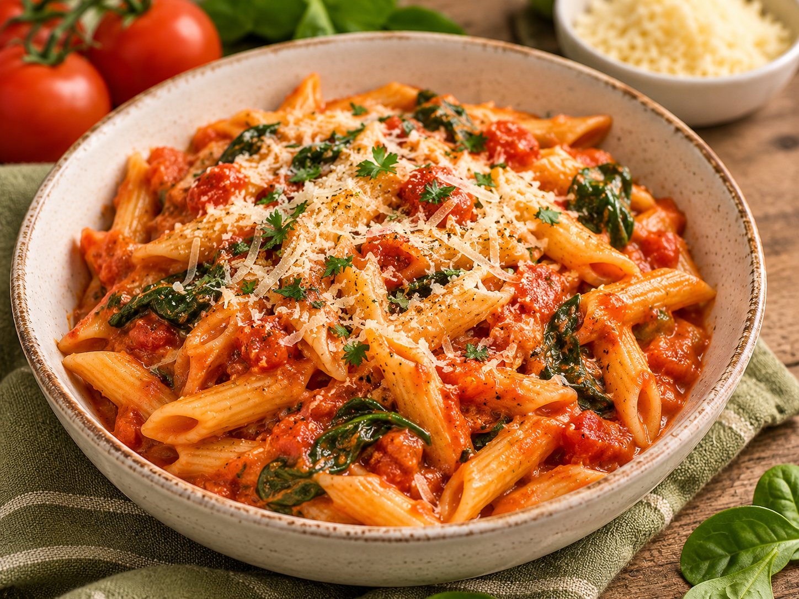

One-Pot Tomato & Spinach Pasta
Tender penne in a tomato sauce with spinach and cheese.
Budget-friendly • Easy dinner
Jump to recipe
AI-generated serving illustration.One-Pot Tomato & Spinach Pasta
Prep: 5 min · Cook: 20 min · Total: 25 min (estimated) · Serves 4
Ingredients
- 12 oz dry penne
- 1 tbsp olive oil
- 3 garlic cloves, minced
- 1 can (14.5 oz) diced tomatoes, undrained
- 3 cups low-sodium vegetable broth, plus more as needed
- 1 tsp Italian seasoning
- ¼ tsp black pepper
- 3 cups baby spinach
- ¼ cup heavy cream
- ½ cup grated vegetarian Parmesan-style cheese
- Salt to taste
Instructions
- Heat oil in a large pot over medium heat. Stir garlic for 30 seconds.
- Add penne, tomatoes, broth, Italian seasoning and pepper. Bring to a boil.
- Reduce to a steady simmer and cook uncovered for 12–15 minutes, stirring frequently. Add a splash of broth if the pot dries before pasta is tender.
- Stir in spinach until wilted, about 2 minutes. Reduce heat and stir in cream and cheese.
- Taste, adjust salt and serve.
Budget tip
Use store-brand pasta and canned tomatoes; frozen spinach works too if thawed and drained.
Storage and reheating
Refrigerate leftovers in a shallow airtight container within 2 hours. Use within 3–4 days and reheat to 165°F.
Recommended Kitchen Essentials
Paid link. As an Amazon Associate I earn from qualifying purchases.
Dutch oven
A Dutch oven offers room for cooking pasta and preparing sauces.
Check Price on Amazon